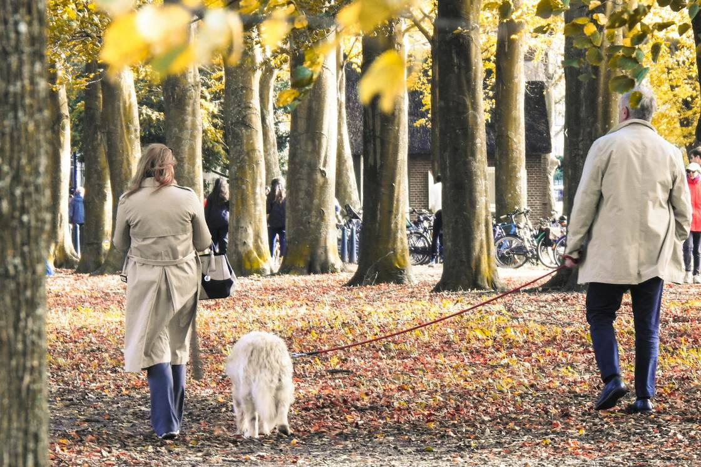

Home › Verzekeringen › Aansprakelijkheidsverzekering
Fred KoelingUw vaste adviseur, Certified Financial Planner
Persoonlijk
Aansprakelijkheidsverzekering voor particulieren
Een ongelukje zit in een klein hoekje. Met een aansprakelijkheidsverzekering bent u verzekerd als u of uw gezin per ongeluk schade veroorzaakt bij een ander.
5,0uit 16 Google reviews- 5,0uit 16 beoordelingen op Google
- 22+jaar ervaring in het vak
- 2015onafhankelijk sinds
- 1vaste adviseur, ook bij schade
Test uzelf
Verzekerd of niet?
Zes situaties uit het dagelijks leven. Denk eerst zelf na en bekijk dan het antwoord.
Uw zoon van negen fietst tegen een geparkeerde auto.Bekijk het antwoord
Meestal verzekerdKinderen onder de 14 zijn wettelijk niet zelf aansprakelijk, maar dan bent u dat als ouder. Veel verzekeraars vergoeden de schade dan.
Uw hond bijt de broek van een voorbijganger kapot.Bekijk het antwoord
Meestal verzekerdAls eigenaar bent u aansprakelijk voor schade door uw huisdier. Die schade valt meestal onder uw aansprakelijkheidsverzekering.
U laat de geleende laptop van een vriend vallen.Bekijk het antwoord
Vaak beperkt verzekerdSchade aan geleende of gehuurde spullen is bij veel verzekeraars beperkt of uitgesloten. Hier verschillen polissen echt.
Uw wasmachine lekt en de benedenburen krijgen waterschade.Bekijk het antwoord
Meestal verzekerdDe schade bij de buren valt meestal onder uw aansprakelijkheidsverzekering. De schade in uw eigen huis loopt via uw woonverzekering.
U stoot uw eigen televisie van de kast.Bekijk het antwoord
Niet via deze verzekeringDeze verzekering is voor schade bij een ander. Schade aan uw eigen spullen kan onder een uitgebreide inboedelverzekering vallen.
Als zzp'er beschadigt u de vloer bij een klant.Bekijk het antwoord
Niet via deze verzekeringSchade tijdens uw werk valt niet onder de verzekering voor particulieren. Daarvoor is een bedrijfsaansprakelijkheidsverzekering.
Dit geldt in de meeste gevallen. De precieze dekking verschilt per verzekeraar. Twijfelt u over uw eigen polis? Bel mij, dan kijk ik het na.
In het kort
- Voor schade die u of uw gezin per ongeluk bij een ander veroorzaakt.
- Een lage premie voor een risico dat groot kan zijn.
- Let op bij geleende spullen en bij schade tijdens uw werk.
Wat is een aansprakelijkheidsverzekering?
Veroorzaakt u schade bij een ander, dan bent u daar volgens de wet vaak aansprakelijk voor. De aansprakelijkheidsverzekering voor particulieren, ook wel AVP genoemd, betaalt die schade. Het gaat om schade aan spullen van een ander en om letselschade.
De premie is laag, maar een schade kan groot zijn. Daarom raad ik bijna iedereen aan om deze verzekering te hebben.
Wat is wel en niet verzekerd?
Wel verzekerd, bijvoorbeeld
- U stoot bij vrienden een dure vaas om.
- Uw kind fietst tegen een geparkeerde auto.
- Uw hond bijt een voorbijganger.
- U laat per ongeluk een lekkage ontstaan die schade geeft bij de benedenburen.
Niet verzekerd
- Schade aan uw eigen spullen. Daarvoor is de inboedelverzekering.
- Schade die u met opzet veroorzaakt.
- Schade met een auto, motor of scooter. Daarvoor is de autoverzekering.
- Schade tijdens uw werk. Bent u ondernemer, dan is daarvoor een bedrijfsaansprakelijkheidsverzekering.
Waar moet u op letten?
Alleenstaand of gezin
Een gezinsdekking geldt voor iedereen die bij u woont, zoals uw partner en kinderen. Een kind dat op kamers woont, is vaak nog meeverzekerd. Dat verschilt per verzekeraar.
Geleende en gehuurde spullen
Schade aan spullen die u leent of huurt, zoals een geleende laptop of een vakantiehuis, is niet altijd of maar beperkt verzekerd. Verzekeraars gaan hier verschillend mee om. Dit is een van de punten waarop polissen echt verschillen.
Kinderen jonger dan 14 jaar
Kinderen onder de 14 zijn volgens de wet niet zelf aansprakelijk. Veel verzekeringen vergoeden de schade dan toch als u dat wilt, zodat u de verhouding met de buren of vrienden goed houdt.
Verzekerd bedrag en eigen risico
Het verzekerde bedrag is meestal minimaal een miljoen euro per gebeurtenis. Kijk ook naar het eigen risico, zeker bij schade door kinderen.
Liever even overleggen?
Twijfelt u of uw gezin goed verzekerd is? Bel of mail mij. Het eerste gesprek is gratis.
Meer over verzekeringen

Mijn aanpak
Hoe ik u help
Aansprakelijkheidsverzekeringen lijken op elkaar, maar de verschillen zitten in de details. Juist die zet ik voor u op een rij.
- Ik kijk of de dekking past bij uw gezin, ook bij kinderen op kamers.
- Ik let op geleende en gehuurde spullen, en op huisdieren.
- Ik kijk of de verzekering voordeliger is in een pakket met uw woonverzekering.
- Bij schade belt u mij, en ik help u verder.
Schade
Schade veroorzaakt bij een ander?
Een ongelukje is zo gebeurd. Zo pakt u het goed aan:
- Geef niet zelf schriftelijk toe dat u aansprakelijk bent. Dat beoordeelt de verzekeraar.
- Wissel gegevens uit met de ander en schrijf op wat er is gebeurd.
- Maak foto's van de schade en vraag de ander om een offerte of de rekening van de reparatie.
- Bel mij voordat u iets toezegt of betaalt.
Bel mij op 06 30 67 97 90
Wordt u per brief of mail aansprakelijk gesteld? Stuur die door naar mij. Dan kijk ik mee voordat u reageert.
Werkwijze
Zo regel ik uw aansprakelijkheidsverzekering
Het is een eenvoudige verzekering, maar de details maken het verschil. Het eerste gesprek kost u niets.
- KennismakenWe bespreken wie er bij u wonen, en of er huisdieren of kinderen op kamers zijn.
- UitzoekenIk kijk welke polissen passen, met aandacht voor geleende spullen en het eigen risico.
- AdviesU hoort welke verzekering ik aanraad en waarom. Vaak kan het voordelig in een pakket.
- Regelen en bijhoudenIk regel de aanvraag. Verandert uw gezin, dan passen we de dekking aan.
Klantervaring
Wat klanten van mij vinden
Klanten waarderen vooral dat ik meedenk en bereikbaar blijf, ook lang na het afsluiten.
5,0
uit 16 beoordelingen op Google
“Fred heeft verstand van zaken, houdt contact met je en denkt echt met je mee. Heel blij mee!”

Uw adviseur
Persoonlijk advies voor uw gezin
Mijn naam is Fred Koeling. Ik kijk niet alleen naar de premie, maar naar uw gezin: kinderen, huisdieren en wat u leent of huurt.
Ik werk sinds 2015 als zelfstandig adviseur, met ruim 22 jaar ervaring in het vak. U heeft bij mij één vast aanspreekpunt.
“Een lage premie, maar een groot risico. Deze verzekering raad ik bijna iedereen aan.”
Ook interessant
Andere verzekeringen
Vragen
Vragen over aansprakelijkheidsverzekering
Nog een vraag over uw aansprakelijkheidsverzekering? Bel gerust, daar hoeft u geen afspraak voor te maken.
Is een aansprakelijkheidsverzekering verplicht?
Nee, voor particulieren niet. Ik raad hem wel bijna iedereen aan, omdat de premie laag is en een schade hoog kan oplopen.
Is schade door mijn hond verzekerd?
Schade die uw huisdier bij een ander veroorzaakt, is meestal verzekerd via uw aansprakelijkheidsverzekering. Voor sommige dieren, zoals paarden, gelden vaak andere regels.
Ben ik verzekerd als ik iets leen?
Niet altijd. Schade aan geleende of gehuurde spullen is bij veel verzekeraars beperkt of uitgesloten. Ik kijk graag met u hoe dat bij uw polis zit.
Geldt de verzekering ook in het buitenland?
Bij de meeste verzekeraars wel. De aansprakelijkheidsverzekering voor particulieren geldt meestal wereldwijd.
Ben ik als zzp'er verzekerd tijdens mijn werk?
Nee. Schade die u tijdens uw werk veroorzaakt, valt niet onder de aansprakelijkheidsverzekering voor particulieren. Daarvoor is een bedrijfsaansprakelijkheidsverzekering.
Is mijn kind op kamers nog meeverzekerd?
Vaak wel, zolang uw kind studeert en niet samenwoont of getrouwd is. De voorwaarden verschillen per verzekeraar. Het is goed om dit na te kijken.
Wat is het verschil tussen een gezinsdekking en een alleenstaandendekking?
Een alleenstaandendekking geldt alleen voor u. Een gezinsdekking geldt voor iedereen die bij u woont, zoals uw partner en kinderen. Gaat u samenwonen of krijgt u kinderen, pas uw verzekering dan aan.
Contact
Goed verzekerd voor schade bij een ander?
Bel of mail mij. Ik kom bij u thuis in Apeldoorn en omgeving, of we spreken online af.
- 06 30 67 97 90Maandag t/m vrijdag 09:00 tot 17:30
- info@finect.nlAntwoord binnen één werkdag
- KantoorVlijtseweg 16, 7317 AH Apeldoorn
- WerkgebiedApeldoorn, Ugchelen, Beekbergen, Loenen, Klarenbeek, Twello, Vaassen en omgeving